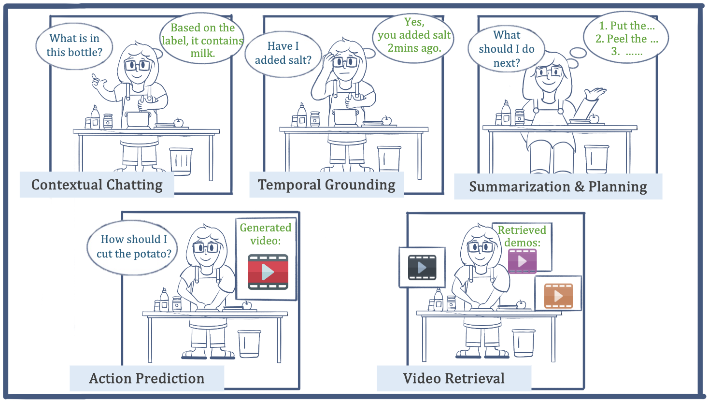
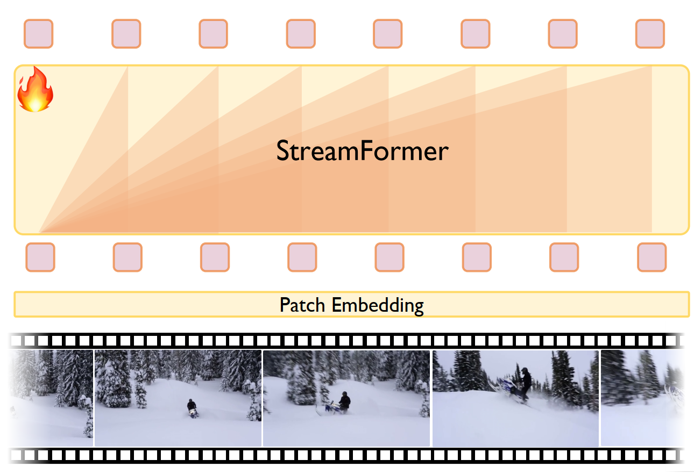
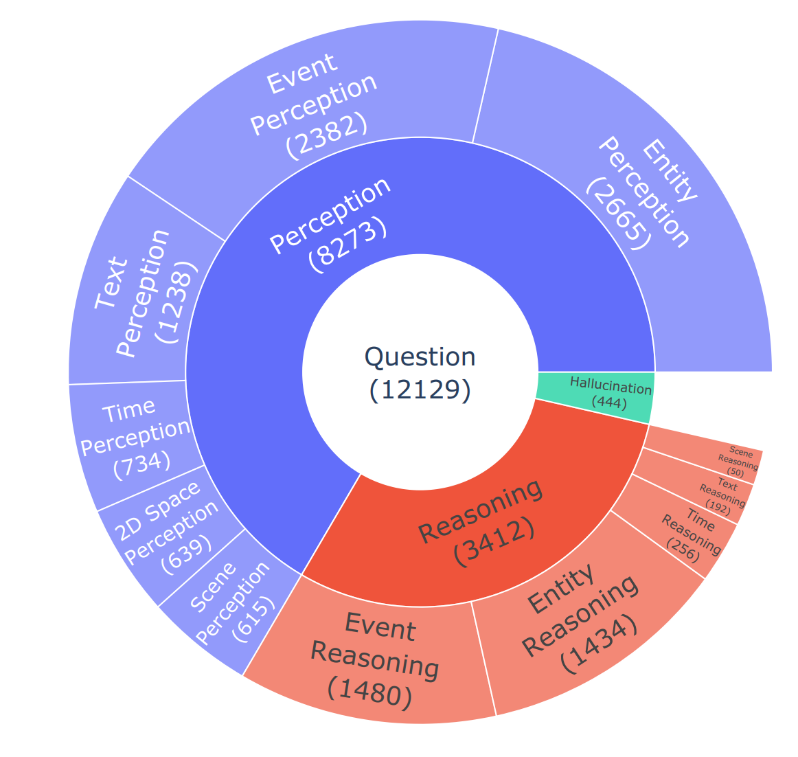
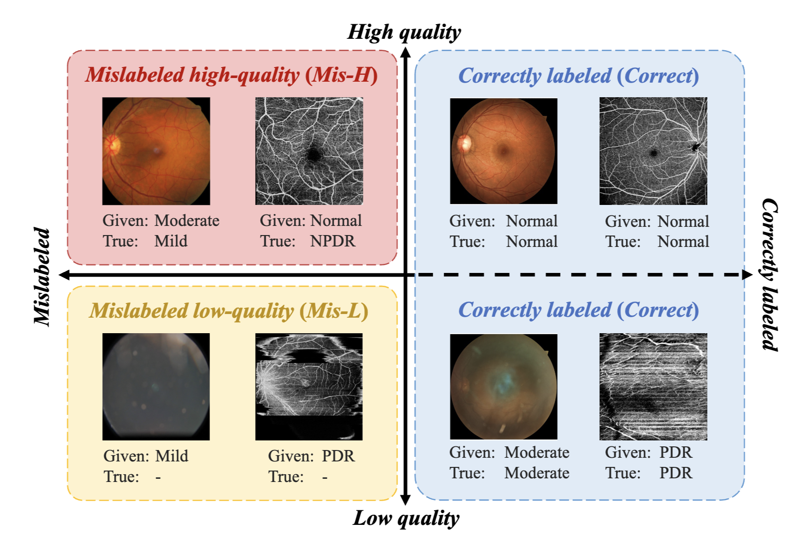

|
I am a final year PhD student at Fudan University, advised by Professor Yuejie Zhang. I also work closely with Professor Weidi Xie. My research focuses on multimodal video understanding, visual representation learning and medical image analysis. I hope that someday medical AI agents would heal the world, make it a better place, for the entire human race.
Google Scholar /
Twitter /
GitHub /
Zhihu
|

|
📢 News
|
📑 Research |
|  |
Vinci: A Real-time Smart Assistant Based on Egocentric Vision-language Model for Portable Devices
IMWUT 2025
A real-time vision-language system that can assist users with daily tasks, including scene understanding, grounding, summarization, and future planning. |
|  |
Learning Streaming Video Representation via Multitask Training
ICCV 2025, Oral
A streaming video backbone that learns global, temporal, and spatial video features in a unified visual-textual alignment framework. |

|
EgoExo-Gen: Egocentric Video Prediction by Watching Exocentric Videos
ICLR 2025
A cross-view video prediction model that predicts future egocentric video frames by leveraging paired exocentric video and text instructions. |

|
Modeling Fine-Grained Hand-Object Dynamics for Egocentric Video Representation Learning
ICLR 2025
An egocentric video-language model that learns fine-grained egocentric video representations by modeling hand-object dynamics. |
|  |
CG-Bench: Clue-grounded Question Answering Benchmark for Long Video Understanding
ICLR 2025
A clue-grounded question answering benchmark for long video understanding. |

|
EgoExoLearn: A Dataset for Bridging Asynchronous Ego- and Exo-centric View of Procedural Activities in Real World
CVPR 2024
A cross-view benchmark dataset that emulates the human demonstration following process, containing recorded egocentric videos guided by exocentric-view demonstration videos. |

|
Retrieval-Augmented Egocentric Video Captioning
CVPR 2024
Given an egocentric video, Egoinstructor automatically retrieves relevant exocentric instructional videos for assisting egocentric video captioning. |

|
Learning Open-vocabulary Semantic Segmentation Models From Natural Language Supervision
CVPR 2023
Training open-vocabulary semantic segmentation models with image-text pairs only, which enables zero-transfer to various segmentation datasets. |

|
CREAM: Weakly supervised object localization via class re-activation mapping
CVPR 2022
A weakly-supervised object localization model that generates better CAMs via soft-clustering algorithms. |

|
Does video-text pretraining help open vocabulary online action detection
NeurIPS 2024
A zero-shot online action detector that leverages vision-language models and enables open-world temporal understanding. |

|
InternVideo: General Video Foundation Models via Generative and Discriminative Learning
Tech report 2022
A foundation model for video / video-text understanding, achieving SOTA over 30 benchmark datasets. |
|  |
QMix: Quality-aware Learning with Mixed Noise for Robust Retinal Disease Diagnosis
IEEE Transactions on Medical Imaging 2025
A noise learning framework that learns a robust disease diagnosis model under mixed noise scenarios. |

|
Concept-Attention Whitening for Interpretable Skin Lesion Diagnosis
MICCAI 2024
An XAI framework that aligns the axes of the latent space with concepts of interest for interpretable skin lesion diagnosis. |

|
Anatomical structure-guided medical vision-language pre-training
MICCAI 2024
An Anatomical Structure-Guided visual-text pre-training framework that leverages the anatomical knowledge. |

|
CMC_v2: Towards More Accurate COVID-19 Detection with Discriminative Video Priors
ECCV 2022 AIMIA Workshop
A Transformer-based model with contrastive representation enhancement. Winner of the 2nd COVID-19 Detection in ECCV 2022. |

|
TCCNet: Temporally Consistent Context-Free Network for Semi-supervised Video Polyp Segmentation
IJCAI 2022, Oral
Co-training a model for semi-supervised video polyp segmentation, achieving comparable results using only 15% labeled data. |

|
CMC-COV19D: Contrastive Mixup Classification for COVID-19 Diagnosis
ICCV 2021, AIMIA Workshop
A ResNest-50 model combined with contrastive mixup technique for 3D COVID-19 CT image classification. Winner of the 1st COVID-19 detection challenge. |

|
Data-Efficient Histopathology Image Analysis with Deformation Representation Learning
BIBM 2020, Oral
Introducing a self-supervised deformation representation learning technique for histopathology image analysis. |
🏆 Awards & Honors
|
💼 Working ExperienceShanghai AI Laboratory
Research Intern
Supervised by Dr. Yifei Huang, Yi Wang and Prof. Yu Qiao
Bell AI Lab, Shanghai
Research Intern
Supervised by Dr. Chenhui Ye
Google Winter AI Camp
🏆 Best Presentation Award
Morgan Stanley Technology
Software Engineering Intern
Supervised by Ray Zhou
|
🎓 Academic ServicesConference Reviewer
ICLR25, NeurIPS25/24/22, ECCV24, MICCAI25/24, CVPR24/23, ICCV25/23, ACMMM25, ICML25
Journal Reviewer
Nature Communications, TPAMI, IJCV, TMM, NeuroComputing
Teaching Assistant (TA)
Data Structure, The Theory of Computation
|
|
This guy is good at website design. |